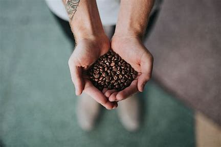
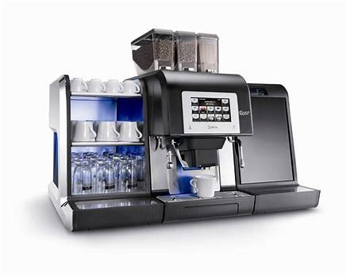
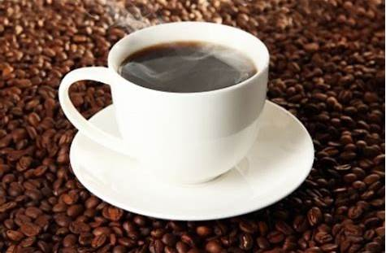
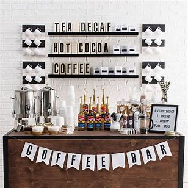

Vilka är vi?
Vi är ett nytänkande ungt företag vars kärnprocess är att leverera kaffe och kaffemaskiner till andra företag. Vårt mål är att förse våra kunder med högkvalitativa produkter och en service i världsklass.
Vad gör vi?
Vi erbjuder ett brett sortiment av kaffemaskiner och olika kaffesorter, vilket gör det enkelt för företag att hitta rätt lösningar för deras behov. Dessutom anordnar vi ett mycket omtyckt kaffeparty-event.
Varför oss?
Våra kaffeparty-event är perfekta för både privatpersoner och företag, där deltagarna får smaka på en mängd olika kaffesorter tillsammans med mörk choklad. Dessutom får de möjlighet att köpa våra produkter.
Kaffeparty, så fungerar det!
Vårt kaffeparty erbjuder en unik upplevelse där ni kan utforska olika kaffesorter och njuta av dem i en social miljö. Kontakta oss för att boka ert kaffeparty!
